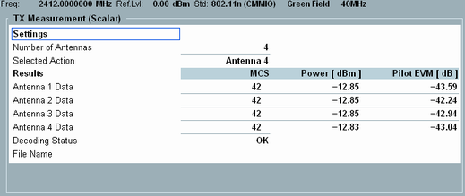

Training Mode View
This view displays the current training mode settings and the results of the preceding training measurements.

CMIMO training mode view
In the "Settings" part, the training mode view displays:
- The number of antennas contributing to the MIMO training signal
- The currently selected antenna
The "Results" table displays the training mode results that were gathered during the current WLAN measurement session.
Remote command:If the "Decoding Status" is OK, it is possible to save the acquired training data to a file for later reuse. This hotkey calls up a "Save File" dialog.
Remote command:This hotkey clears the training results and resets the internal data of the training mode.
Remote command: